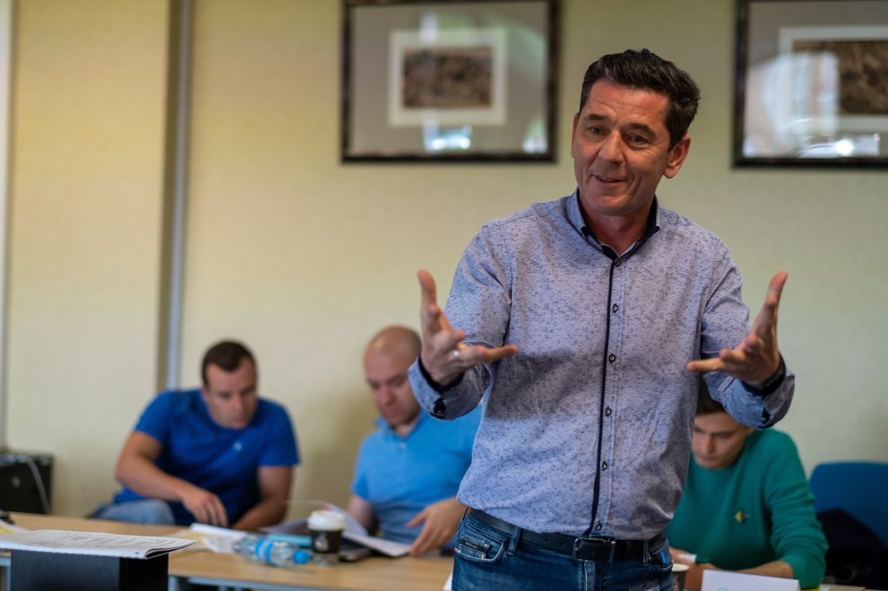

Ведущий — Валерий Воспяков
Онлайн-интенсив
«Мышление под контроль»
3-дневная практика для тех, кто устал от внутреннего сопротивления.
Освободись от ограничивающих убеждений и начни двигаться вперёд.
Записаться на интенсив
Что вас ждёт
- Диагностика ограничивающих убеждений
- Практики трансформации мышления
- Инструменты снижения тревожности
- Разборы в режиме реального времени
Кому подойдёт
- Тем, кто чувствует выгорание
- Тем, кто в тупике
- Тем, кто хочет меняться, но не знает как
- Тем, кто ищет поддержку на старте
Программа интенсива
- День 1: Выявление скрытых убеждений
- День 2: Освобождение и перезапись мышления
- День 3: Закрепление, план действий
- Бонус: Записи, чек-листы, поддержка
О ведущем
Валерий Воспяков — врач по первому образованию, позже — психолог и коуч. Более 60 тренингов и десятки консультаций по трансформации мышления. Помогаю людям выходить из тупиков не через давление, а через осознанность и внутреннюю опору.
Отзывы участников
“После трёх сессий я почувствовал, что получил новое мышление и мотивацию” — А.
“Работа с убеждениями открыла мне глаза — и я начал действовать иначе” — Е.